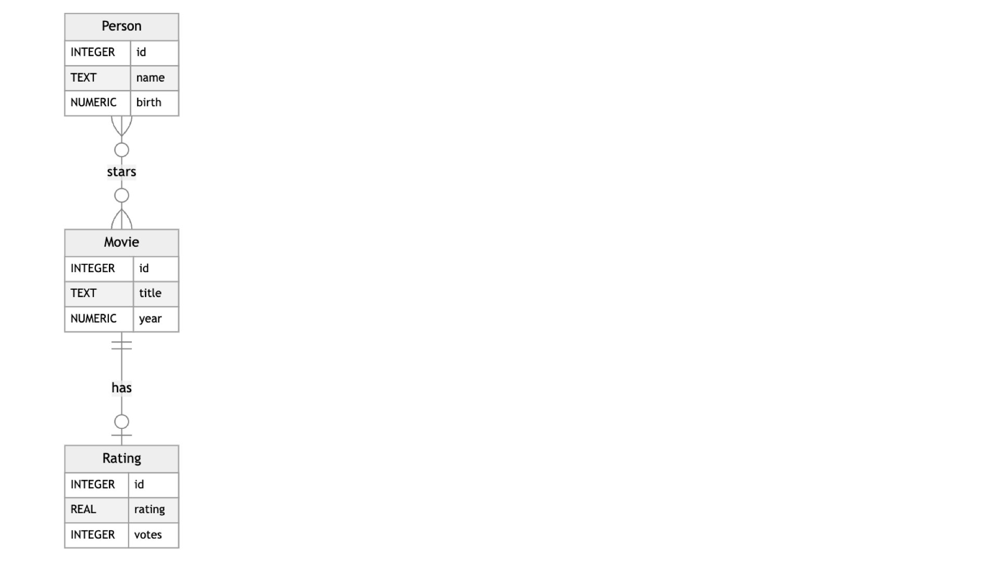
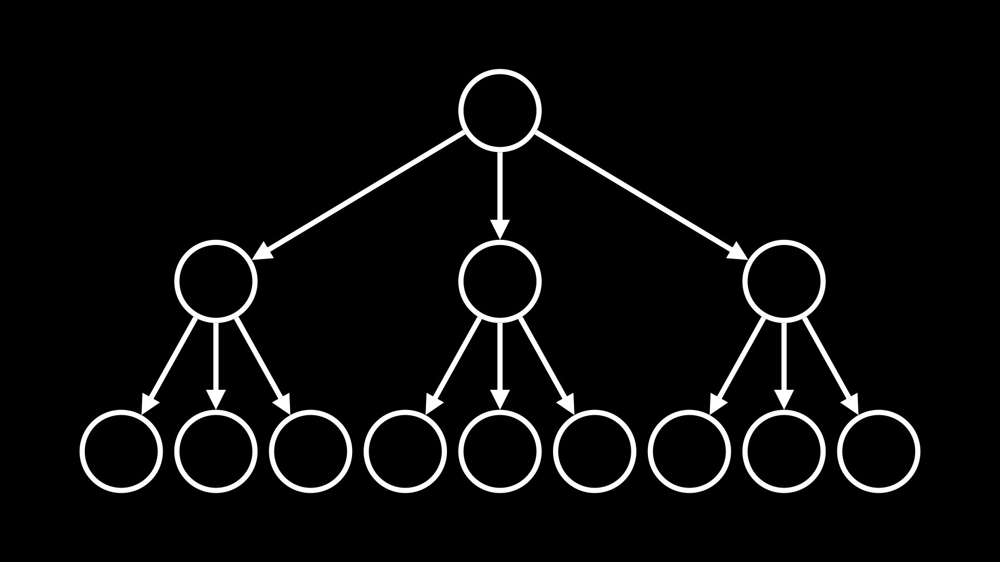
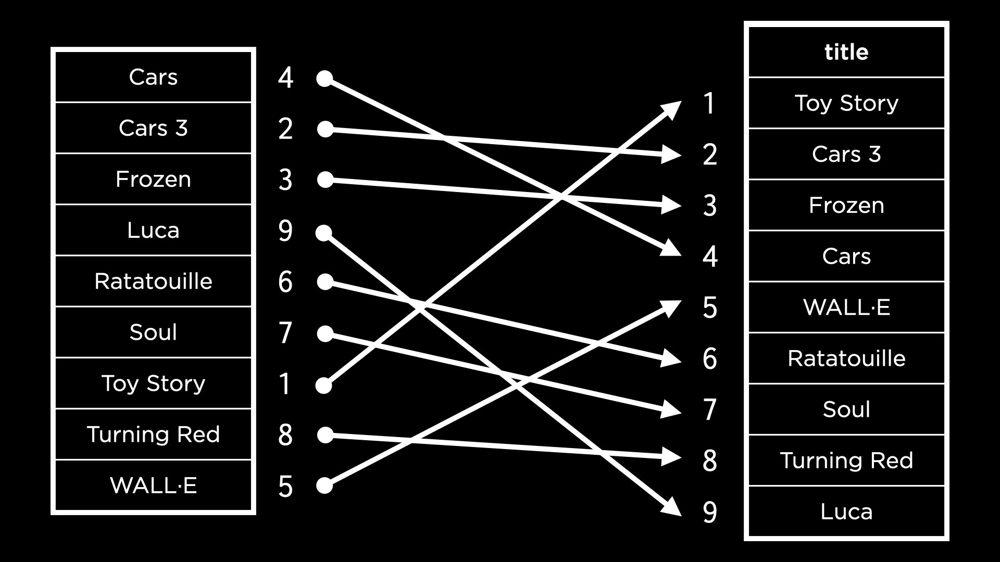
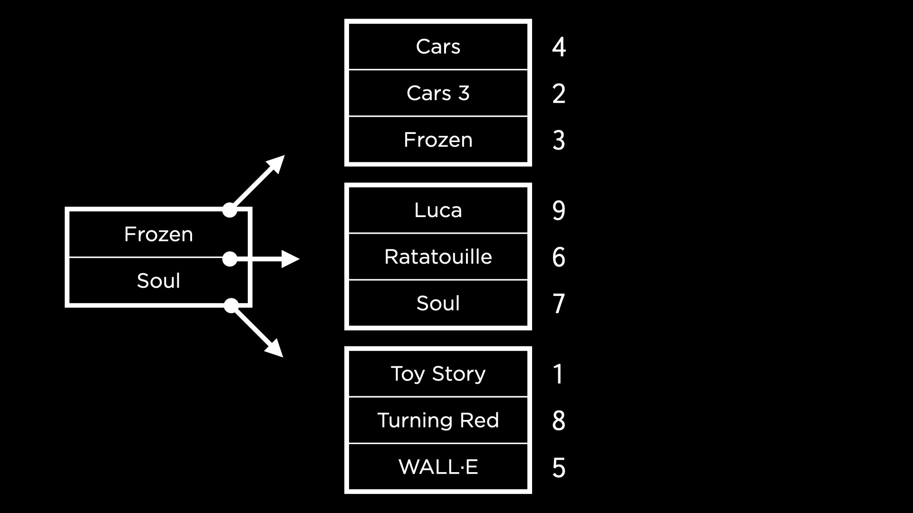
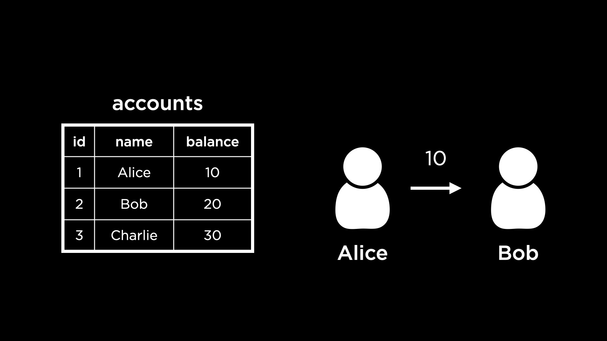

Lecture 5
- Introduction
- Index
- Index across Multiple Tables
- Space Trade-off
- Time Trade-off
- Partial Index
- Vacuum
- Concurrency
- Fin
Introduction
- This week, we will learn how to optimize our SQL queries, both for time and space. We will also learn how to run queries concurrently.
- We will do all of this in the context of a new database — the Internet Movies Database, or IMDb as it is more popularly known. Our SQLite database is compiled from the large online database of movies you may have seen before at imdb.com.
-
Take a look at these statistics to get a sense of how big this database is! It has much more data than any of the other databases we have worked with so far.
-
Here is the ER Diagram detailing the entities and their relationships.

Index
- Let us open up this database called
movies.dbin SQLite. -
.schemashows us the tables created in this database. To implement the many-to-many relationship between the entities Person and Movie from the ER Diagram, we have a joint table here calledstarsthat references the ID columns of bothpeopleandmoviesas foreign key columns! -
To peek into the
moviestable, we can select from the table and limit results.SELECT * FROM "movies" LIMIT 5; -
To find the information pertaining to the movie Cars, we would run the following query.
SELECT * FROM "movies" WHERE "title" = 'Cars';- Say we want to find how long it took for this query to run. SQLite has a command
.timer onthat enables us to time our queries. - On running the above query to find Cars again, we can see three different time measurements displayed along with the results.
- “real” time indicates the stopwatch time, or the time between executing the query and obtaining the results. This is the measure of time we will focus on. The time taken to execute this query during lecture was roughly a tenth of a second!
- Say we want to find how long it took for this query to run. SQLite has a command
- Under the hood, when the query to find Cars was run, we triggered a scan of the table
movies— that is, the tablemovieswas scanned top to bottom, one row at a time, to find all the rows with the title Cars. - We can optimize this query to be more efficient than a scan. In the same way that textbooks often have an index, databases tables can have an index as well. An index, in database terminology, is a structure used to speed up the retrieval of rows from a table.
-
We can use the following command to create an index for the
"title"column in themoviestable.CREATE INDEX "title_index" ON "movies" ("title");- After creating this index, we run the query to find the movie titled Cars again. On this run, the time taken is significantly shorter (during lecture,almost eight times faster than the first run)!
- In the previous example, once the index was created, we just assumed that SQL would use it to find a movie. However, we can also explicitly see this by using a SQLite command
EXPLAIN QUERY PLANbefore any query. -
To remove the index we just created, run:
DROP INDEX "title_index";- After dropping the index, running
EXPLAIN QUERY PLANagain with theSELECTquery will demonstrate that the plan would revert to scanning the entire database.
- After dropping the index, running
Questions
Do databases not have implicit algorithms to optimize searching?
- They do, for some columns. In SQLite and most other database management systems, if we specify that a column is a primary key, an index will automatically be created via which we can search for the primary key. However, for regular columns like
"title", there would be no automatic optimization.
Would it be advisable to create a different index for every column in case we need it?
- While that seems useful, there are trade-offs with space and the time it takes to later insert data into tables with an index. We will see more on this shortly!
Index across Multiple Tables
-
We would run the following query to find all the movies Tom Hanks starred in.
SELECT "title" FROM "movies" WHERE "id" IN ( SELECT "movie_id" FROM "stars" WHERE "person_id" = ( SELECT "id" FROM "people" WHERE "name" = 'Tom Hanks' ) ); - To understand what kind of index could help speed this query up, we can run
EXPLAIN QUERY PLANahead of this query again. This shows us that the query requires two scans — ofpeopleandstars. The tablemoviesis not scanned because we are searchingmoviesby its ID, for which an index is automatically created by SQLite! -
Let us create the two indexes to speed this query up.
CREATE INDEX "person_index" ON "stars" ("person_id"); CREATE INDEX "name_index" ON "people" ("name"); - Now, we run
EXPLAIN QUERY PLANwith the same nested query. We can observe that- all the scans are now searches using indexes, which is great!
- the search on the table
peopleuses something called aCOVERING INDEX
- A covering index means that all the information needed for the query can be found within the index itself. Instead of two steps:
- looking up relevant information in the index,
- using the index to then search the table, a covering index means that we do our search in one step (just the first one).
- To have our search on the table
starsalso use a covering index, we can add"movie_id"to the index we created forstars. This will ensure that the information being looked up (movie ID) and the value being searched on (person ID) are both be in the index. -
First, let us drop the existing implementation of our index on the
starstable.DROP INDEX "person_index"; -
Next, we create the new index.
CREATE INDEX "person_index" ON "stars" ("person_id", "movie_id"); -
Running the following will demonstrate that we now have two covering indexes, which should result in a much faster search!
EXPLAIN QUERY PLAN SELECT "title" FROM "movies" WHERE "id" IN ( SELECT "movie_id" FROM "stars" WHERE "person_id" = ( SELECT "id" FROM "people" WHERE "name" = 'Tom Hanks' ) ); - Making sure that we have run
.timer onlet us execute the above query to find all the movies Tom Hanks has starred in, and observe the time it takes to run. The query now runs a lot faster than it did without indexes (in lecture, an order of magnitude faster)!
Space Trade-off
- Indexes seem incredibly helpful, but there are trade-offs associated — they occupy additional space in the database, so while we gain query speed, we do lose space.
-
An index is stored in a database as a data structure called a B-Tree, or balanced tree. A tree data structure looks something like:

- Notice that the tree has many nodes, each connected to a few others by arrows. The root node, or the node from which the tree originates, has three children. Some nodes at the edge of the tree do not point to any other nodes. These are called leaf nodes.
- Let us consider how an index is created for the
"title"column of the tablemovies. If the movie titles were sorted alphabetically, it would be a lot easier to find a particular movie by using binary search. -
In this case, a copy is made of the
"titles"column. This copy is sorted and then linked back to the original rows within themoviestable by pointing to the movie IDs. This is visualized below.
- While this helps us visualize the index for this column easily, in reality, the index is not a single column but is broken up into many nodes. This is because if the database has a lot of data, like our IMDb example, storing one column all together in memory might not be feasible.
-
If we have multiple nodes containing sections of the index, however, we also need nodes to navigate to the right sections. For example, consider the following nodes. The left-hand node directs us to the right section of the index based on whether the movie title comes before Frozen, between Frozen and Soul, or after Soul alphabetically!

- The above representation is a B-tree! This is how indexes are stored in SQLite.
Time Trade-off
- Similar to the space trade-off we discussed earlier, it also takes longer to insert data into a column and then add it to an index. Each time a value is added to the index, the B-tree needs to be traversed to figure out where the value should be added!
Partial Index
- This is an index that includes only a subset of rows from a table, allowing us to save some space that a full index would occupy.
-
This is especially useful when we know that users query only a subset of rows from the table. In the case of IMDb, it may be that the users are more likely to query a movie that was just released as opposed to a movie that is 15 years old. Let’s try to create a partial index that stores the titles of movies released in 2023.
CREATE INDEX "recents" ON "movies" ("titles") WHERE "year" = 2023; -
We can check that searching for movies released in 2023 uses the new index.
EXPLAIN QUERY PLAN SELECT "title" FROM "movies" WHERE "year" = 2023;This shows us that the
moviestable is scanned using the partial index.
Questions
Are indexes saved in the schema?
- Yes, in SQLite, they are! We can confirm this by running
.schemaand we will see the indexes created listed in the database schema.
Vacuum
- There are ways to delete unused space in our database. SQLite allows us to “vacuum” data — this cleans up previously deleted data (that is actually not deleted, but just marked as space being available for the next
INSERT). -
To find the size of
movies.dbon the terminal, we can use a Unix commanddu -b movies.db - In lecture, this command showed us that the size of the database is something like 158 million bytes, or 158 megabytes.
-
We can now connect to our database and drop an index we previously created.
DROP INDEX "person_index"; -
Now, if we run the Unix command again, we see that the size of the database has not decreased! To actually clean up the deleted space, we need to vacuum it. We can run the following command in SQLite.
VACUUM;This might take a second or two to run. On running the Unix command to check the size of the database again, we can should see a smaller size. Once we drop all the indexes and vacuum again, the database will be considerably smaller than 158 MB (in lecture, around 100 MB).
Questions
Is it possible to vacuum faster?
- Each vacuum can take a different amount of time, depending on the amount of space we are trying to vacuum and how easy it is to find the bits and bytes that need to be freed up!
If a query to delete some rows doesn’t actually delete them, but only marks them as deleted, could we still retrieve these rows?
- People trained in forensics are able to find data we think is deleted but is actually still on our computers. In the case of SQLite, after performing a vacuum, it would not be possible to find deleted rows again.
Concurrency
- Thus far, we have seen how to optimize single queries. Now, we will look at how to allow not just one query, but multiple at a time.
- Concurrency is the simultaneous handling of multiple queries or interactions by the database. Imagine a database for a website, or a financial service, that gets a lot of traffic at the same time. Concurrency is particularly important in these cases.
-
Some database transactions can be multi-part. For example, consider a bank’s database. The following is a view of the table
accountsthat stores account balances.
- One transaction could be sending money from one account to the other. For example, Alice is trying to send $10 to Bob.
- To complete this transaction, we would need to add $10 to Bob’s account and also subtract $10 from Alice’s account. If someone sees the status of the
accountsdatabase after the first update to Bob’s account but before the second update to Alice’s account, they could get an incorrect understanding of the total amount of money held by the bank.
Transactions
- To an outside observer, it should seem like the different parts of a transaction happen all at once. In database terminology, a transaction is an individual unit of work — something that cannot be broken down into smaller pieces.
- Transactions have some properties, which can be remembered using the acronym ACID:
- atomicity: can’t be broken down into smaller pieces,
- consistency: should not violate a database constraint,
- isolation: if multiple users access a database, their transactions cannot interfere with each other,
- durability: in case of any failure within the database, all data changed by transactions will remain.
- Let’s open up
bank.dbin our terminal so we can implement a transaction for transferring money from Alice to Bob! -
First, we want to see the data already in the
accountstable.SELECT * FROM "accounts";We note here that Bob’s ID is 2 and Alice’s ID is 1, which will be useful for our query.
-
To move $10 from Alice’s account to Bob’s, we can write the following transaction.
BEGIN TRANSACTION; UPDATE "accounts" SET "balance" = "balance" + 10 WHERE "id" = 2; UPDATE "accounts" SET "balance" = "balance" - 10 WHERE "id" = 1; COMMIT;Notice the
UPDATEstatements are written in between the commands to begin the transaction and to commit it. If we execute the query after writing theUPDATEstatements, but without committing, neither of the twoUPDATEstatements will be run! This helps keep the transaction atomic. By updating our table in this way, we are unable to see the intermediate steps. - If we tried to run the above transaction again — Alice tries to pay Bob another $10 — it should fail to run because Alice’s account balance is at 0. (The
"balance"column inaccountshas a check constraint to ensure that it has a non-negative value. We can run.schemato check this.) -
The way we implement reverting the transaction is using
ROLLBACK. Once we begin a transaction and write some SQL statements, if any of them fail, we can end it with aROLLBACKto revert all values to their pre-transaction state. This helps keep transactions consistent.BEGIN TRANSACTION; UPDATE "accounts" SET "balance" = "balance" + 10 WHERE "id" = 2; UPDATE "accounts" SET "balance" = "balance" - 10 WHERE "id" = 1; -- Invokes constraint error ROLLBACK;
Race Conditions
- Transactions can help guard against race conditions.
- A race condition occurs when multiple entities simultaneously access and make decisions based on a shared value, potentially causing inconsistencies in the database. Unresolved race conditions can be exploited by hackers to manipulate the database.
- In the lecture, an example of a race condition is discussed wherein two users working together can exploit momentary inconsistencies in the database to rob the bank.
- However, transactions are processed in isolation to avoid the inconsistencies in the first place. Each transaction dealing with similar data from our database will be processed sequentially. This helps prevent the inconsistencies that an adversarial attack can exploit.
- To make transactions sequential, SQLite and other database management systems use locks on databases. A table in a database could be in a few different states:
- UNLOCKED: this is the default state when no user is accessing the database,
- SHARED: when a transaction is reading data from the database, it obtains shared lock that allows other transactions to read simultaneously from the database,
- EXCLUSIVE: if a transaction needs to write or update data, it obtains an exclusive lock on the database that does not allow other transactions to occur at the same time (not even a read)
Questions
How do we decide when a transaction can get an exclusive lock? How do we prioritize different kinds of transactions?
- Different algorithms could be used to make these decisions. For example, we could always choose the transaction that came first. If an exclusive transaction is needed, no other transaction can run at the same time, which is a necessary downside to ensure consistency of the table.
What is the granularity of locking? Do we lock a database, a table or a row of a table?
-
This depends on the DBMS. In SQLite, we can actually do this by running an exclusive transaction as below:
BEGIN EXCLUSIVE TRANSACTION;If we do not complete this transaction now, and try to connect to the database through a different terminal to read from the table, we will get an error that the database is locked! This, of course, is a very coarse way of locking because it locks the entire database. Because SQLite is coarse in this manner, it has a module for prioritizing transactions and making sure an exclusive lock is obtained only for the shortest necessary duration.
Fin
- This brings us to the conclusion of Lecture 5 about Optimizing in SQL!